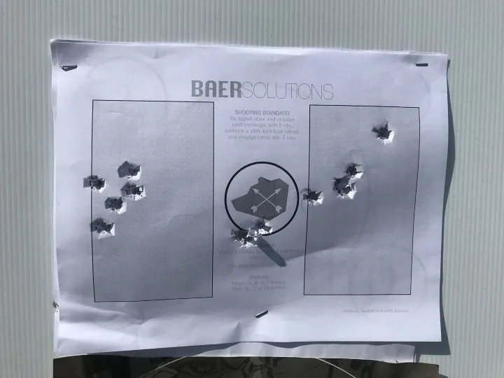

Podstawowy sprawdzian BAER SOLUTIONS dla pistoletu jak i karabinka.
2025-10-22
BAER SOLUTIONS STANDARDS TARGET, znany również jako „baer” target.
10szt naboi w pierwszym magazynku, 3szt w drugim
Pozycja z bronią
w kaburze, ręce opuszczone wzdłuż ciała, magazynku na sygnał wyciągnij broń i strzel 5
razy w lewy lub prawy prostokąt o wymiarach 15x9cm
Przejdź do następnego
prostokąta i strzel 5 razy.
Wykonaj przeładowanie (zamek w tylnym
położeniu) i strzel 3 razy do środkowego koła.
Po zakończeniu ćwiczenia
wykonaj kontrolę celu, kontrole broni i kontrolę otoczenia, kabura

Standardowy cel BAER Solutions został stworzony, aby ocenić Twoje wyniki na początku i na końcu treningu. W prawdziwym życiu nie mamy czasu na rozgrzewkę, więc strzelamy na zimno, bez rozgrzewki. Sugerowana odległość to 5 metrów. Jak w przypadku wszystkiego, gdy już osiągniesz w tym biegłość, możesz przejść do 7, a nawet 10 metrów.
Czas 9 sekund lub mniej, oznacza zaliczenie.
Odległości dla pistoletu 3/5/7m
Odległości dla karabinka 5/7/10m
tarcza do pobrania i wydrukowania w formacie A4 niżej
W związku z porozumieniem z BAER Solutions możemy legalnie używać ich tarcz i schematów ćwiczeń. Dzięki Norek 🙂
Ku Dłacz.